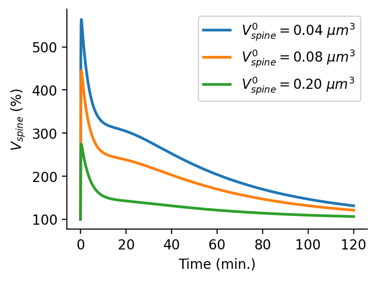
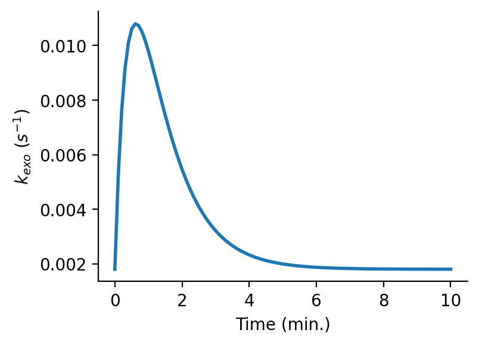

Welcome to AMPAR_Mean-Field-Model’s documentation!¶
Created on Wed Nov 4 11:43:38 2020
@author: Moritz
-
mf.DV(t, V0, exocytosis)[source]¶ This function describes the evolution of the spine volume during sLTP.
- Parameters
- tfloat
time passed since induction of LTP
- V0float
initial spine volume.
- exocytosisTrue, False
States whether exocytosis is blocked or not. Make sure that the boolean value is chosen in agreement with the definition of kexo.
- Returns
- float
current factor of spine volume change.
Examples
Import libraries:
>>> import numpy as np >>> import matplotlib.pyplot as plt >>> import mf as mf >>> import seaborn as sns
Set parameters:
>>> t=np.linspace(0,120*60,1000) >>> exocytosis=True >>> spineVolumes=[0.04,0.08,0.2]
Plot:
>>> plt.figure(figsize=(4,3), dpi=150) >>> for V0 in spineVolumes: >>> plt.plot(t/60,mf.DV(t,V0,exocytosis)*100, linewidth=2, label='$V_{spine}^0=$'+'{:1.2f} $\mu m^3$'.format(V0)) >>> plt.legend() >>> plt.xlabel('Time (min.)') >>> plt.ylabel('$V_{spine}$ (%)') >>> sns.despine()
Output:

{kind=link}
-
class
mf.Model_system[source]¶ This class contains the set of differential equations that describe AMPAR trafficking at spines.
Methods
odes(Init,t,Vspine,P,kin,kout,kexo,kendo,kUB,kBU,Cooperativity,sLTP,kin_RE,kout_RE)
Defines the ODEs that describe the synapse.
-
odes(Init, t, Vspine, P, kin, kout, kexo, kendo, kUB, kBU, Cooperativity, sLTP, kin_RE, kout_RE)[source]¶ Defines the ODEs that describe the AMPAR dynamics at the spine.
- Parameters
- Init[U(0),B(0),Sexo(0)]
Initial conditions for the three variables of the system.
- tarray_like
Time.
- Vspinefloat
Describes the spine volume and spine volume change during E-LTP.
- Pfloat
Number of binding site/slots at the PSD.
- kinfloat
Rate at which receptors hop from the dednritic membrane compartment onto the spine membrane compartment.
- koutfloat
Rate at which receptors hop from the spine membrane compartment onto the dendritic membrane compartment.
- kexofloat
Rate of exocytosis events occuring at the spine.
- kendofloat
Rate at which receptors are endocytosed at the spine.
- kUBfloat
Rate at which AMPARs bind to PSD slots.
- kBUfloat
Rate at which AMPARs unbind from PSD slots.
- Cooperativity: 1,0
States whether binding is cooperative (1) or not cooperative (0).
- sLTP1,0
States whether slTP does occur (1) or does not occur (0).
- kin_REfloat
Rate at which AMPAR containing endosomes enter the spine (dynamics of exocytosis event size Sexo).
- kout_REfloat
Rate at which AMPAR containing endosomes leave the spine.
- Returns
- out: [dU,dB,dS_exo]
-
-
class
mf.Parameter(base_value)[source]¶ This class defines some basic properties and functionality for parameters that change during LTP induction.
- Attributes
- base_valuefloat
Base value of the correspconding model parameter, i.e. before LTP-induction.
Methods
timecourse(function,pars)
Sets up time course of the parameter during LTP-induction. Requires a function and the parameters of that function to be passed.
update(t)
Updates the parameter to the current value according to the function passed to timecourse.
-
timecourse(function, pars)[source]¶ Sets up time course of the parameter during LTP-induction. Requires a function and the parameters of that function to be passed.
- Parameters
- functionfunction
A function that describes the time course of the parameter during LTP-induction
- parsarray_like
List of parameters for the function.
- Returns
- out:
-
mf.Stim_Resp(t, a0, a, b, c)[source]¶ This function describes the response of a parameter to the LTP induction-stimulus.
- Parameters
- tfloat
time passed since induction of LTP
- a0float
baseline of the parameter (Should usually be set to 1).
- afloat
Parameter amplitude during LTP induction
- bfloat
time constant
- cfloat
time constant
- Returns
- float
current factor of parameter change.
Examples
Import libraries:
>>> import numpy as np >>> import matplotlib.pyplot as plt >>> import mf as mf >>> import seaborn as sns
Set parameters:
>>> t=np.linspace(0,10*60,100) >>> kexo0=0.0018 >>> exocytosis=True
Plot:
>>> plt.figure(figsize=(4,3), dpi=150) >>> plt.plot(t/60,kexo0*mf.Stim_Resp(t,1,5,25,60), linewidth=2) >>> plt.xlabel('Time (min.)') >>> plt.ylabel('$k_{exo}$ ($s^{-1}$)') >>> sns.despine()
Output:

{kind=link}